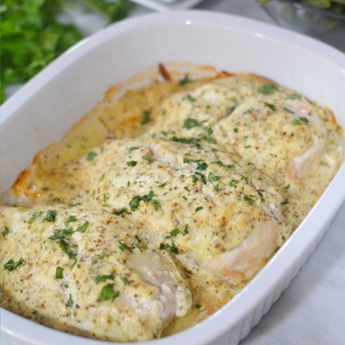

Cream Chikcen

It takes 5 minutes to prepare and 1 hour and 30 minutes to cook.
- 4 skinless, boneless chicken breast halves
- 1 pinch poultry seasoning
- 1 (10.5 ounce) can condensed cream of chicken soup
- 10 1/2 ounces milk
Steps To Take
- Preheat the over to 350 degrees F (175 degrees C)
- Place chicken in a 9x13-inch baking dish; season with poultry seasoning.
- Mix together condensed soup and milk in a bowl.
- Pour soup mixture evenly over chicken.
- Bake in the preheated oven until chicken is no longer pink in the center and juices run clear, about 1 1/2 hours.
- An instant-read the thermometer inserted in the center should read at least 165 degrees F (74 degrees C)